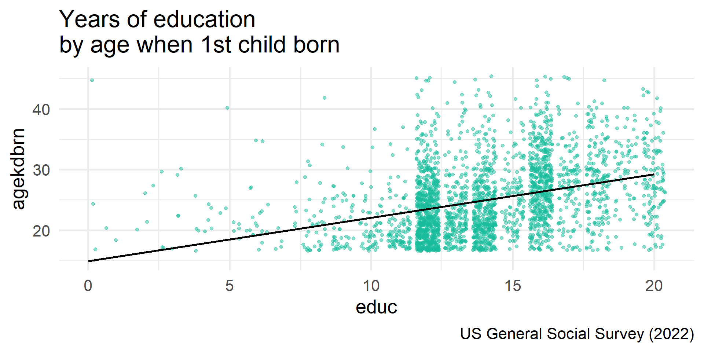

By the end of the lecture, you will be able to …
Which of the following expressions correctly checks if a is equal to b in R?
Which of the following best describes the benefit of using pipes in dplyr?
What does the filter() function do in dplyr?
Which of the following uses mutate() correctly to create a new column called income_level?
Download and open code-along-06.qmd
Load the standard packages & 1 new package: gtsummary()
fefam Better for man to work, woman tend homepostlife Belief in life after deathlifenow R’s rating of life overall now from 0-10premarsx Sex before marriageagekdbrn R’s age when 1st child bornsex Respondents sexage Age of respondentpolviews Think of self as liberal or conservativeMake a df with only the (pretty) categorical and continuous variables we’ll analyze.
# Categorical Variables
my_cat <- gss22 |>
select(id, premarsx, fefam, postlife, sex, polviews) |>
zap_missing() |>
as_factor() |>
droplevels()
# Continuous Variables
my_con <- gss22 |>
select(id, age, educ, lifenow, agekdbrn) |>
mutate(
age = as.numeric(age),
educ = as.numeric(educ),
lifenow = as.numeric(lifenow),
agekdbrn = as.numeric(agekdbrn))
# Combine the two dataframes
my_data <- left_join(my_cat, my_con, by = "id")\(chi^2\) determines if categorical variables are related
Tests if the rows and columns in a two-way table are independent
The news has been reporting a large gender difference in attitudes about gender roles.
You evaluate this narrative using the variable fefam:
It is much better for everyone involved if the man is the achiever outside the home and the woman takes care of the home and family.
How do you test your hypothesis?
Which of these equations represents your research hypothesis?
Which of these equations represents your null hypothesis?
Use summarytools::ctable
table() to ctable().
Cross-Tabulation, Column Proportions
fefam * sex
Data Frame: my_data
------------------- ----- --------------- --------------- ---------------
sex male female Total
fefam
strongly agree 87 ( 6.8%) 84 ( 5.8%) 171 ( 6.3%)
agree 292 ( 22.9%) 221 ( 15.3%) 513 ( 18.9%)
disagree 573 ( 44.9%) 602 ( 41.6%) 1175 ( 43.2%)
strongly disagree 323 ( 25.3%) 539 ( 37.3%) 862 ( 31.7%)
Total 1275 (100.0%) 1446 (100.0%) 2721 (100.0%)
------------------- ----- --------------- --------------- ---------------Now that we know how to use the dplyr |>!
sex
|
Total | ||
|---|---|---|---|
| male | female | ||
| fefam | |||
| strongly agree | 87 (6.8%) | 84 (5.8%) | 171 (6.3%) |
| agree | 292 (23%) | 221 (15%) | 513 (19%) |
| disagree | 573 (45%) | 602 (42%) | 1,175 (43%) |
| strongly disagree | 323 (25%) | 539 (37%) | 862 (32%) |
| Total | 1,275 (100%) | 1,446 (100%) | 2,721 (100%) |
p-value
sex
|
Total | ||
|---|---|---|---|
| male | female | ||
| fefam | |||
| strongly agree | 87 (6.8%) | 84 (5.8%) | 171 (6.3%) |
| agree | 292 (23%) | 221 (15%) | 513 (19%) |
| disagree | 573 (45%) | 602 (42%) | 1,175 (43%) |
| strongly disagree | 323 (25%) | 539 (37%) | 862 (32%) |
| Total | 1,275 (100%) | 1,446 (100%) | 2,721 (100%) |
| Pearson’s Chi-squared test, p<0.001 | |||
Which of these statements best summarizes your conclusion?
sex
|
Total | ||
|---|---|---|---|
| male | female | ||
| fefam | |||
| strongly agree | 3 (7.5%) | 3 (6.3%) | 6 (6.8%) |
| agree | 11 (28%) | 6 (13%) | 17 (19%) |
| disagree | 19 (48%) | 19 (40%) | 38 (43%) |
| strongly disagree | 7 (18%) | 20 (42%) | 27 (31%) |
| Total | 40 (100%) | 48 (100%) | 88 (100%) |
| Fisher’s exact test, p=0.065 | |||
t.test() with proportions# Use logic to recode factor as mean (yes = 1; no: 2 = 0)
my_data$ghosts <- ifelse(my_data$postlife == "yes", 1, 0)
# t.test
t.test(my_data$ghosts ~ my_data$sex, alternative = "two.sided")
Welch Two Sample t-test
data: my_data$ghosts by my_data$sex
t = -5.4996, df = 1418.2, p-value = 4.51e-08
alternative hypothesis: true difference in means between group male and group female is not equal to 0
95 percent confidence interval:
-0.14739470 -0.06989112
sample estimates:
mean in group male mean in group female
0.7553763 0.8640193 t.test() & \(chi^2\)cor.test()R is the correlation between two interval-ratio variables.
Heads Up!
Because Pearson’s R doesn’t require specifying an independent and dependent variable, the order of the variables does not matter.

cor.test() in action
Pearson's product-moment correlation
data: educ and agekdbrn
t = 19.88, df = 2780, p-value < 2.2e-16
alternative hypothesis: true correlation is not equal to 0
95 percent confidence interval:
0.3198258 0.3849110
sample estimates:
cor
0.3527951 cor.test()cor.test() & t.test()Heads Up!
Correlating a dichotomous variable and a continuous variable is equivalent to doing a t-test on that continuous variable by the dichotomous variable.
When x is coded as 0/1, these formulas yield equivalent p-values, even if the t-statistics look slightly different due to rounding or variance assumptions.
# Create numeric version of sex
my_data <- my_data %>%
mutate(female = if_else(sex == "female", 1, 0))
cor.test(
~ female + lifenow,
data = my_data,
method = "pearson",
na.action = na.omit
)
Pearson's product-moment correlation
data: female and lifenow
t = -0.85827, df = 2142, p-value = 0.3908
alternative hypothesis: true correlation is not equal to 0
95 percent confidence interval:
-0.06082662 0.02381053
sample estimates:
cor
-0.01854126
Welch Two Sample t-test
data: my_data$lifenow by my_data$sex
t = 0.85806, df = 2137, p-value = 0.391
alternative hypothesis: true difference in means between group male and group female is not equal to 0
95 percent confidence interval:
-0.07835816 0.20027032
sample estimates:
mean in group male mean in group female
7.817837 7.756881 | Feature | t-test | Chi-square test | Pearson’s Correlation (R) |
|---|---|---|---|
| Purpose | Compare means between groups | Test association between categories | Measure linear relationship strength |
| Data Type | Continuous (numeric) | Categorical (nominal or ordinal) | Continuous (numeric) |
| Variables Required | 1 dependent, 1 independent | 2 categorical variables | 2 continuous variables |
| Directionality | One-tailed or two-tailed | Non-directional | Indicates direction (+/-) and strength |
| Example Question | Do men and women differ in time spent on housework ? | Is marital status associated with political party identity? | Is there a correlation between number of children and parental stress? |
Are beliefs about premarital sex (premarsx) dependent on political identity (polviews)?
Is there a gender difference (sex) in political identity (polviews)?
Describe the relationship between ageand life satisfaction (lifenow).
polviews
|
Total | |||||||
|---|---|---|---|---|---|---|---|---|
| extremely liberal | liberal | slightly liberal | moderate, middle of the road | slightly conservative | conservative | extremely conservative | ||
| premarsx | ||||||||
| always wrong | 7 (4.4%) | 19 (5.1%) | 16 (5.2%) | 122 (12%) | 48 (15%) | 103 (28%) | 44 (38%) | 359 (14%) |
| almost always wrong | 6 (3.8%) | 11 (2.9%) | 11 (3.6%) | 55 (5.6%) | 24 (7.3%) | 36 (9.9%) | 11 (9.5%) | 154 (5.8%) |
| wrong only sometimes | 7 (4.4%) | 32 (8.6%) | 33 (11%) | 150 (15%) | 59 (18%) | 57 (16%) | 13 (11%) | 351 (13%) |
| not wrong at all | 139 (87%) | 311 (83%) | 249 (81%) | 657 (67%) | 200 (60%) | 169 (46%) | 48 (41%) | 1,773 (67%) |
| Total | 159 (100%) | 373 (100%) | 309 (100%) | 984 (100%) | 331 (100%) | 365 (100%) | 116 (100%) | 2,637 (100%) |
| Pearson’s Chi-squared test, p<0.001 | ||||||||
sex
|
Total | ||
|---|---|---|---|
| male | female | ||
| polviews | |||
| extremely liberal | 103 (5.5%) | 129 (6.0%) | 232 (5.8%) |
| liberal | 215 (12%) | 347 (16%) | 562 (14%) |
| slightly liberal | 229 (12%) | 247 (12%) | 476 (12%) |
| moderate, middle of the road | 661 (36%) | 848 (40%) | 1,509 (38%) |
| slightly conservative | 267 (14%) | 223 (10%) | 490 (12%) |
| conservative | 298 (16%) | 258 (12%) | 556 (14%) |
| extremely conservative | 83 (4.5%) | 92 (4.3%) | 175 (4.4%) |
| Total | 1,856 (100%) | 2,144 (100%) | 4,000 (100%) |
| Pearson’s Chi-squared test, p<0.001 | |||
Pearson's product-moment correlation
data: lifenow and age
t = 7.9037, df = 2031, p-value = 4.402e-15
alternative hypothesis: true correlation is not equal to 0
95 percent confidence interval:
0.1302456 0.2146032
sample estimates:
cor
0.1727412